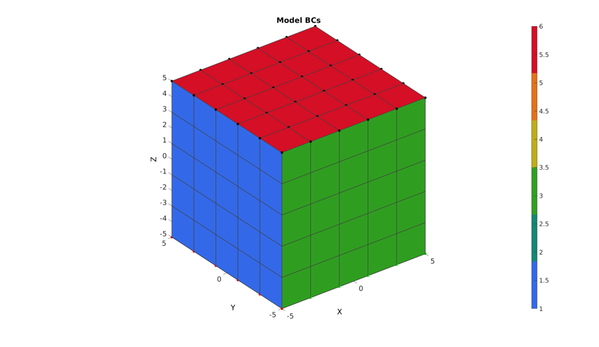
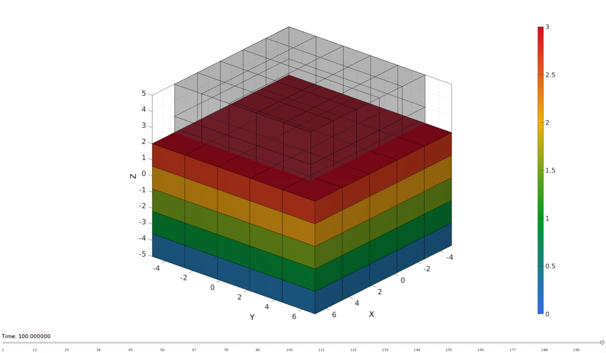
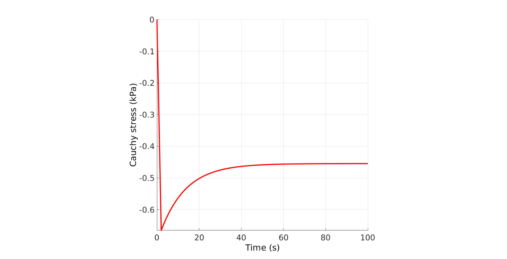

DEMO_FEBio_block_uniaxial_compression_dynamic_viscoelastic_ramp_hold
Below is a demonstration for: 1) Building an FEBio model for uniaxial compression for a viscoelastic material 2) Running the model 3) Importing displacement and force results 4) Plotting results
Contents
clear; close all; clc;
Plot settings
fontSize=20; faceAlpha1=0.8; faceAlpha2=1; edgeColor=0.25*ones(1,3); edgeWidth=1.5; markerSize=25; lineWidth=3;
Control parameters
% path names defaultFolder = fileparts(fileparts(mfilename('fullpath'))); savePath=fullfile(defaultFolder,'data','temp'); modelName=fullfile(savePath,'tempModel'); %Specifying dimensions and number of elements sampleWidth=10; sampleThickness=10; sampleHeight=10; pointSpacings=[1 1 1]*2; initialArea=sampleWidth*sampleThickness; numElementsWidth=round(sampleWidth/pointSpacings(1)); numElementsThickness=round(sampleThickness/pointSpacings(2)); numElementsHeight=round(sampleHeight/pointSpacings(3)); stretchLoad=0.7; displacementMagnitude=[0 0 (stretchLoad*sampleHeight)-sampleHeight]; %Material parameter set c1=1e-3; %ogden c1 m1=3; %ogden m1 k_factor=1000; %Bulk modulus factor k=c1*k_factor; %The bulk modulus g1=1/2; %Viscoelastic QLV proportional coefficient t1=12; %Viscoelastic QLV time coefficient d=1e-9; %Density (not required for static analysis) t_total=100; %Total simulation time t_load=2; %Time from start to max load t_step_ini=1e-3; %Initial desired step size t_step_max=0.5; %Maximum step size analysisType='static'; uncoupledLaw=1; %1=uncoupled, 2=coupled
CREATING MESHED BOX
%Create box 1 boxDim=[sampleWidth sampleThickness sampleHeight]; %Dimensions boxEl=[numElementsWidth numElementsThickness numElementsHeight]; %Number of elements [box1]=hexMeshBox(boxDim,boxEl); E=box1.E; V=box1.V; Fb=box1.Fb; faceBoundaryMarker=box1.faceBoundaryMarker; X=V(:,1); Y=V(:,2); Z=V(:,3); VE=[mean(X(E),2) mean(Y(E),2) mean(Z(E),2)]; elementMaterialIndices=ones(size(E,1),1);
% Plotting boundary surfaces hf=cFigure; title('Model surfaces','FontSize',fontSize); xlabel('X','FontSize',fontSize); ylabel('Y','FontSize',fontSize); zlabel('Z','FontSize',fontSize); hold on; patch('Faces',Fb,'Vertices',V,'FaceColor','flat','CData',faceBoundaryMarker,'FaceAlpha',faceAlpha2,'lineWidth',edgeWidth,'edgeColor',edgeColor); colormap(gjet(6)); colorbar; set(gca,'FontSize',fontSize); view(3); axis tight; axis equal; grid on; drawnow;
DEFINE BC's
%Define faces logicFace=faceBoundaryMarker==1; Fr=Fb(logicFace,:); bcSupportList_X=unique(Fr(:)); logicFace=faceBoundaryMarker==3; Fr=Fb(logicFace,:); bcSupportList_Y=unique(Fr(:)); logicFace=faceBoundaryMarker==5; Fr=Fb(logicFace,:); bcSupportList_Z=unique(Fr(:)); %Define line support bcSupportList_X_axis=bcSupportList_Y(ismember(bcSupportList_Y,bcSupportList_Z)); bcSupportList_Y_axis=bcSupportList_X(ismember(bcSupportList_X,bcSupportList_Z)); %Prescribed displacement nodes logicPrescribe=faceBoundaryMarker==6; Fr=Fb(logicPrescribe,:); bcPrescribeList=unique(Fr(:)); bcPrescribeMagnitudes=displacementMagnitude(ones(1,numel(bcPrescribeList)),:);
Visualize BC's
hf=cFigure; title('Model BCs','FontSize',fontSize); xlabel('X','FontSize',fontSize); ylabel('Y','FontSize',fontSize); zlabel('Z','FontSize',fontSize); hold on; patch('Faces',Fb,'Vertices',V,'FaceColor','flat','CData',faceBoundaryMarker,'FaceAlpha',faceAlpha2,'lineWidth',edgeWidth,'edgeColor',edgeColor); plotV(V(bcSupportList_Z,:),'b.','MarkerSize',markerSize); plotV(V(bcPrescribeList,:),'k.','MarkerSize',markerSize); plotV(V(bcSupportList_X_axis,:),'g.','MarkerSize',markerSize); plotV(V(bcSupportList_Y_axis,:),'r.','MarkerSize',markerSize); set(gca,'FontSize',fontSize); colormap(gjet(6)); colorbar; set(gca,'FontSize',fontSize); view(3); axis tight; axis equal; grid on; drawnow;
CONSTRUCTING FEB MODEL
FEB_struct.febio_spec.version='2.0'; FEB_struct.Module.Type='solid'; % Defining file names FEB_struct.run_filename=[modelName,'.feb']; %FEB file name FEB_struct.run_logname=[modelName,'.txt']; %FEBio log file name %Geometry section FEB_struct.Geometry.Nodes=V; FEB_struct.Geometry.Elements={E}; %The element sets FEB_struct.Geometry.ElementType={'hex8'}; %The element types FEB_struct.Geometry.ElementMat={elementMaterialIndices}; FEB_struct.Geometry.ElementsPartName={'Block'}; %Material section switch uncoupledLaw case 1 FEB_struct.Materials{1}.Type='uncoupled viscoelastic'; FEB_struct.Materials{1}.Name='Block_material'; FEB_struct.Materials{1}.Properties={'g1','t1','elastic','density'}; FEB_struct.Materials{1}.Values={g1,t1,[],d}; FEB_struct.Materials{1}.PropAttrName=cell(1,numel(FEB_struct.Materials{1}.Properties)); FEB_struct.Materials{1}.PropAttrName{3}='type'; FEB_struct.Materials{1}.PropAttrVal{3}='Ogden'; FEB_struct.Materials{1}.PropParName=cell(1,numel(FEB_struct.Materials{1}.Properties)); FEB_struct.Materials{1}.PropParVal=cell(1,numel(FEB_struct.Materials{1}.Properties)); FEB_struct.Materials{1}.PropParName{3}={'c1','m1','k','density'}; FEB_struct.Materials{1}.PropParVal{3}={c1,m1,k,d}; case 2 FEB_struct.Materials{1}.Type='viscoelastic'; FEB_struct.Materials{1}.Name='Block_material'; FEB_struct.Materials{1}.Properties={'g1','t1','elastic','density'}; FEB_struct.Materials{1}.Values={g1,t1,[],d}; FEB_struct.Materials{1}.PropAttrName=cell(1,numel(FEB_struct.Materials{1}.Properties)); FEB_struct.Materials{1}.PropAttrName{3}='type'; FEB_struct.Materials{1}.PropAttrVal{3}='Ogden unconstrained'; FEB_struct.Materials{1}.PropParName=cell(1,numel(FEB_struct.Materials{1}.Properties)); FEB_struct.Materials{1}.PropParVal=cell(1,numel(FEB_struct.Materials{1}.Properties)); FEB_struct.Materials{1}.PropParName{3}={'c1','m1','cp','density'}; FEB_struct.Materials{1}.PropParVal{3}={c1,m1,k,d}; end %Step specific control sections n=round(t_total/t_step_ini); t_step=t_total/n; FEB_struct.Control.AnalysisType=analysisType; FEB_struct.Control.Properties={'time_steps','step_size',... 'max_refs','max_ups',... 'dtol','etol','rtol','lstol'}; FEB_struct.Control.Values={n,t_step,... 15,0,... 0.001,0.01,0,0.9}; FEB_struct.Control.TimeStepperProperties={'dtmin','dtmax','max_retries','opt_iter','aggressiveness'}; FEB_struct.Control.TimeStepperValues={t_step/100,t_step_max,5,10,0}; %Defining node sets %Defining node sets FEB_struct.Geometry.NodeSet{1}.Set=bcSupportList_Y_axis; FEB_struct.Geometry.NodeSet{1}.Name='bcSupportList_Y_axis'; FEB_struct.Geometry.NodeSet{2}.Set=bcSupportList_X_axis; FEB_struct.Geometry.NodeSet{2}.Name='bcSupportList_X_axis'; FEB_struct.Geometry.NodeSet{3}.Set=bcSupportList_Z; FEB_struct.Geometry.NodeSet{3}.Name='bcSupportList_Z'; % FEB_struct.Geometry.NodeSet{4}.Set=bcPrescribeList; % FEB_struct.Geometry.NodeSet{4}.Name='bcPrescribeList'; %Adding BC information FEB_struct.Boundary.Fix{1}.bc='x'; FEB_struct.Boundary.Fix{1}.SetName=FEB_struct.Geometry.NodeSet{1}.Name; FEB_struct.Boundary.Fix{2}.bc='y'; FEB_struct.Boundary.Fix{2}.SetName=FEB_struct.Geometry.NodeSet{2}.Name; FEB_struct.Boundary.Fix{3}.bc='z'; FEB_struct.Boundary.Fix{3}.SetName=FEB_struct.Geometry.NodeSet{3}.Name; FEB_struct.Boundary.Prescribe{1}.Set=bcPrescribeList; FEB_struct.Boundary.Prescribe{1}.bc='z'; FEB_struct.Boundary.Prescribe{1}.lc=1; FEB_struct.Boundary.Prescribe{1}.nodeScale=displacementMagnitude(ones(numel(bcPrescribeList),1),3); FEB_struct.Boundary.Prescribe{1}.Type='relative'; %Load curves FEB_struct.LoadData.LoadCurves.id=1; FEB_struct.LoadData.LoadCurves.type={'linear'}; FEB_struct.LoadData.LoadCurves.loadPoints={[0 0;t_load 1;t_total 1]}; %Adding output requests FEB_struct.Output.VarTypes={'displacement','stress','relative volume','shell thickness'}; %Specify log file output run_disp_output_name=[FEB_struct.run_filename(1:end-4),'_node_out.txt']; run_force_output_name=[FEB_struct.run_filename(1:end-4),'_force_out.txt']; FEB_struct.run_output_names={run_disp_output_name,run_force_output_name}; FEB_struct.output_types={'node_data','node_data'}; FEB_struct.data_types={'ux;uy;uz','Rx;Ry;Rz'};
SAVING .FEB FILE
FEB_struct.disp_opt=0; %Display waitbars
febStruct2febFile(FEB_struct);
%%%%%%%%%%%%%%%%%%%%%%%%%%%%%%%%%%%%%%%%%%%%% --- Writing FEBio XML object --- 18-Aug-2017 14:36:57 Adding Module level Adding Control level Adding Globals level Adding Material level Warning: Elastic field (containing material structure) missing. Assuming "old" viscoelastic specification type. It is recommended to update code. Adding Geometry level ----> Adding node field ----> Adding element field ----> Adding hex8 element entries.... ----> Adding NodeSet field Adding Boundary level ----> Defining fix type boundary conditions ----> Defining prescribe type boundary conditions Adding LoadData level ----> Defining load curves Adding Output level ----> Adding plotfile field ----> Adding logfile field Warning: Provided path of logfile is replaced by .feb file path. Only provide filename to avoid this warning Warning: Provided path of logfile is replaced by .feb file path. Only provide filename to avoid this warning Writing .feb file --- Done --- 18-Aug-2017 14:36:58
RUNNING FEBIO JOB
% FEBioRunStruct.FEBioPath='C:\Program Files\febio2-2.2.6\bin\febio2.exe'; FEBioRunStruct.run_filename=FEB_struct.run_filename; FEBioRunStruct.run_logname=FEB_struct.run_logname; FEBioRunStruct.disp_on=1; FEBioRunStruct.disp_log_on=1; FEBioRunStruct.runMode='external';%'internal'; FEBioRunStruct.t_check=0.25; %Time for checking log file (dont set too small) FEBioRunStruct.maxtpi=1e99; %Max analysis time FEBioRunStruct.maxLogCheckTime=3; %Max log file checking time [runFlag]=runMonitorFEBio(FEBioRunStruct);%START FEBio NOW!!!!!!!!
%%%%%%%%%%%%%%%%%%%%%%%%%%%%%%%%%%%%%%%%%%%%% --- STARTING FEBIO JOB --- 18-Aug-2017 14:36:58 Waiting for log file... Proceeding to check log file...18-Aug-2017 14:36:58 ------- converged at time : 0.001 ------- converged at time : 0.006 ------- converged at time : 0.031 ------- converged at time : 0.151 ------- converged at time : 0.347 ------- converged at time : 0.6038 ------- converged at time : 0.90924 ------- converged at time : 1.25359 ------- converged at time : 1.62907 ------- converged at time : 2.02946 ------- converged at time : 2.44977 ------- converged at time : 2.88601 ------- converged at time : 3.33501 ------- converged at time : 3.79421 ------- converged at time : 4.26157 ------- converged at time : 4.73545 ------- converged at time : 5.21456 ------- converged at time : 5.69785 ------- converged at time : 6.18448 ------- converged at time : 6.67378 ------- converged at time : 7.16523 ------- converged at time : 7.65838 ------- converged at time : 8.15291 ------- converged at time : 8.64852 ------- converged at time : 9.14502 ------- converged at time : 9.64222 ------- converged at time : 10.14 ------- converged at time : 10.6382 ------- converged at time : 11.1367 ------- converged at time : 11.6356 ------- converged at time : 12.1347 ------- converged at time : 12.6339 ------- converged at time : 13.1334 ------- converged at time : 13.6329 ------- converged at time : 14.1325 ------- converged at time : 14.6322 ------- converged at time : 15.132 ------- converged at time : 15.6318 ------- converged at time : 16.1316 ------- converged at time : 16.6315 ------- converged at time : 17.1314 ------- converged at time : 17.6313 ------- converged at time : 18.1313 ------- converged at time : 18.6312 ------- converged at time : 19.1312 ------- converged at time : 19.6311 ------- converged at time : 20.1311 ------- converged at time : 20.6311 ------- converged at time : 21.1311 ------- converged at time : 21.6311 ------- converged at time : 22.131 ------- converged at time : 22.631 ------- converged at time : 23.131 ------- converged at time : 23.631 ------- converged at time : 24.131 ------- converged at time : 24.631 ------- converged at time : 25.131 ------- converged at time : 25.631 ------- converged at time : 26.131 ------- converged at time : 26.631 ------- converged at time : 27.131 ------- converged at time : 27.631 ------- converged at time : 28.131 ------- converged at time : 28.631 ------- converged at time : 29.131 ------- converged at time : 29.631 ------- converged at time : 30.131 ------- converged at time : 30.631 ------- converged at time : 31.131 ------- converged at time : 31.631 ------- converged at time : 32.131 ------- converged at time : 32.631 ------- converged at time : 33.131 ------- converged at time : 33.631 ------- converged at time : 34.131 ------- converged at time : 34.631 ------- converged at time : 35.131 ------- converged at time : 35.631 ------- converged at time : 36.131 ------- converged at time : 36.631 ------- converged at time : 37.131 ------- converged at time : 37.631 ------- converged at time : 38.131 ------- converged at time : 38.631 ------- converged at time : 39.131 ------- converged at time : 39.631 ------- converged at time : 40.131 ------- converged at time : 40.631 ------- converged at time : 41.131 ------- converged at time : 41.631 ------- converged at time : 42.131 ------- converged at time : 42.631 ------- converged at time : 43.131 ------- converged at time : 43.631 ------- converged at time : 44.131 ------- converged at time : 44.631 ------- converged at time : 45.131 ------- converged at time : 45.631 ------- converged at time : 46.131 ------- converged at time : 46.631 ------- converged at time : 47.131 ------- converged at time : 47.631 ------- converged at time : 48.131 ------- converged at time : 48.631 ------- converged at time : 49.131 ------- converged at time : 49.631 ------- converged at time : 50.131 ------- converged at time : 50.631 ------- converged at time : 51.131 ------- converged at time : 51.631 ------- converged at time : 52.131 ------- converged at time : 52.631 ------- converged at time : 53.131 ------- converged at time : 53.631 ------- converged at time : 54.131 ------- converged at time : 54.631 ------- converged at time : 55.131 ------- converged at time : 55.631 ------- converged at time : 56.131 ------- converged at time : 56.631 ------- converged at time : 57.131 ------- converged at time : 57.631 ------- converged at time : 58.131 ------- converged at time : 58.631 ------- converged at time : 59.131 ------- converged at time : 59.631 ------- converged at time : 60.131 ------- converged at time : 60.631 ------- converged at time : 61.131 ------- converged at time : 61.631 ------- converged at time : 62.131 ------- converged at time : 62.631 ------- converged at time : 63.131 ------- converged at time : 63.631 ------- converged at time : 64.131 ------- converged at time : 64.631 ------- converged at time : 65.131 ------- converged at time : 65.631 ------- converged at time : 66.131 ------- converged at time : 66.631 ------- converged at time : 67.131 ------- converged at time : 67.631 ------- converged at time : 68.131 ------- converged at time : 68.631 ------- converged at time : 69.131 ------- converged at time : 69.631 ------- converged at time : 70.131 ------- converged at time : 70.631 ------- converged at time : 71.131 ------- converged at time : 71.631 ------- converged at time : 72.131 ------- converged at time : 72.631 ------- converged at time : 73.131 ------- converged at time : 73.631 ------- converged at time : 74.131 ------- converged at time : 74.631 ------- converged at time : 75.131 ------- converged at time : 75.631 ------- converged at time : 76.131 ------- converged at time : 76.631 ------- converged at time : 77.131 ------- converged at time : 77.631 ------- converged at time : 78.131 ------- converged at time : 78.631 ------- converged at time : 79.131 ------- converged at time : 79.631 ------- converged at time : 80.131 ------- converged at time : 80.631 ------- converged at time : 81.131 ------- converged at time : 81.631 ------- converged at time : 82.131 ------- converged at time : 82.631 ------- converged at time : 83.131 ------- converged at time : 83.631 ------- converged at time : 84.131 ------- converged at time : 84.631 ------- converged at time : 85.131 ------- converged at time : 85.631 ------- converged at time : 86.131 ------- converged at time : 86.631 ------- converged at time : 87.131 ------- converged at time : 87.631 ------- converged at time : 88.131 ------- converged at time : 88.631 ------- converged at time : 89.131 ------- converged at time : 89.631 ------- converged at time : 90.131 ------- converged at time : 90.631 ------- converged at time : 91.131 ------- converged at time : 91.631 ------- converged at time : 92.131 ------- converged at time : 92.631 ------- converged at time : 93.131 ------- converged at time : 93.631 ------- converged at time : 94.131 ------- converged at time : 94.631 ------- converged at time : 95.131 ------- converged at time : 95.631 ------- converged at time : 96.131 ------- converged at time : 96.631 ------- converged at time : 97.131 ------- converged at time : 97.631 ------- converged at time : 98.131 ------- converged at time : 98.631 ------- converged at time : 99.131 ------- converged at time : 99.631 ------- converged at time : 100 --- Done --- 18-Aug-2017 14:37:01
if runFlag==1 %i.e. a succesful run
IMPORTING NODAL DISPLACEMENT RESULTS
Importing nodal displacements from a log file
[~, N_disp_mat,~]=importFEBio_logfile(FEB_struct.run_output_names{1}); %Nodal displacements
IMPORTING NODAL FORCES
Importing nodal forces from a log file
[time_mat, N_force_mat,~]=importFEBio_logfile(FEB_struct.run_output_names{2}); %Nodal forces
time_mat=[0; time_mat(:)]; %Time
Plotting the deformed model
N_disp_mat=N_disp_mat(:,2:end,:);
sizImport=size(N_disp_mat);
sizImport(3)=sizImport(3)+1;
N_disp_mat_n=zeros(sizImport);
N_disp_mat_n(:,:,2:end)=N_disp_mat;
N_disp_mat=N_disp_mat_n;
DN=N_disp_mat(:,:,end);
DN_magnitude=sqrt(sum(DN(:,3).^2,2));
V_def=V+DN;
[CF]=vertexToFaceMeasure(Fb,DN_magnitude);
hf3=cFigure;
xlabel('X','FontSize',fontSize); ylabel('Y','FontSize',fontSize); zlabel('Z','FontSize',fontSize); hold on;
hp=gpatch(Fb,V_def,CF,'k',1);
gpatch(Fb,V,0.5*ones(1,3),'k',0.25);
view(3); axis tight; axis equal; grid on; box on;
colormap(gjet(250)); colorbar;
caxis([0 max(DN_magnitude)]);
axis([min(V_def(:,1)) max(V_def(:,1)) min(V_def(:,2)) max(V_def(:,2)) min(V(:,3)) max(V(:,3))]);
view(130,25);
camlight headlight;
set(gca,'FontSize',fontSize);
drawnow;
animStruct.Time=time_mat;
for qt=1:1:size(N_disp_mat,3)
DN=N_disp_mat(:,:,qt);
DN_magnitude=sqrt(sum(DN(:,3).^2,2));
V_def=V+DN;
[CF]=vertexToFaceMeasure(Fb,DN_magnitude);
%Set entries in animation structure
animStruct.Handles{qt}=[hp hp]; %Handles of objects to animate
animStruct.Props{qt}={'Vertices','CData'}; %Properties of objects to animate
animStruct.Set{qt}={V_def,CF}; %Property values for to set in order to animate
end
% title('The deformed model','FontSize',fontSize);
anim8(hf3,animStruct);
drawnow;
 DERIVING STRESS METRICS
%Get Z forces FZ=sum(N_force_mat(bcPrescribeList,end,:),1); FZ=[0; FZ(:)]; %Mean top surface nodal forces %Derive applied stretch DZ_set=N_disp_mat(bcPrescribeList,end,:); %Final nodal displacements DZ_set=mean(DZ_set,1); stretch_sim=(DZ_set+sampleHeight)./sampleHeight; stretch_sim=[stretch_sim(:)]; %Derive simulated Cauchy stress (alternatively import stress and take the mean) currentArea=initialArea./stretch_sim; stress_cauchy_sim=FZ./currentArea; %Cauchy stress stress_cauchy_sim=stress_cauchy_sim.*1e3; %Scale to kPa
hf4=cFigure;
xlabel('Time (s)','FontSize',fontSize); ylabel('Cauchy stress (kPa)','FontSize',fontSize); zlabel('Z','FontSize',fontSize); hold on;
h=plot(time_mat(:),stress_cauchy_sim(:),'r-','lineWidth',lineWidth);
view(2); axis tight; grid on; axis square;
set(gca,'FontSize',fontSize);
drawnow;
 end

GIBBON www.gibboncode.org
Kevin Mattheus Moerman, gibbon.toolbox@gmail.com
GIBBON footer text
License: https://github.com/gibbonCode/GIBBON/blob/master/LICENSE
GIBBON: The Geometry and Image-based Bioengineering add-On. A toolbox for image segmentation, image-based modeling, meshing, and finite element analysis.
Copyright (C) 2017 Kevin Mattheus Moerman
This program is free software: you can redistribute it and/or modify it under the terms of the GNU General Public License as published by the Free Software Foundation, either version 3 of the License, or (at your option) any later version.
This program is distributed in the hope that it will be useful, but WITHOUT ANY WARRANTY; without even the implied warranty of MERCHANTABILITY or FITNESS FOR A PARTICULAR PURPOSE. See the GNU General Public License for more details.
You should have received a copy of the GNU General Public License along with this program. If not, see http://www.gnu.org/licenses/.